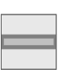
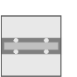
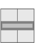
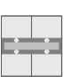
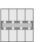
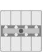

DELTA 样式设备属性
列出的属性显示在Hardware and network editor > Inspector window > Properties当在 KNX PL-Link 的设备在Device view选项卡。
UP 285/2 | UP 285/3 | UP 286/2 | UP 286/3 | UP 287/2 | UP 287/3 | UP 287/5 |
 |  |  |  |  |  |
General and Catalog information
常规和目录信息组提供有关设备的信息。
财产 | 描述 | 默认值 |
|---|---|---|
模式 | 模式显示设备的网络模式。只读。 | KNX PL-Link |
姓名 | 名称是用于输入设备名称的文本字段。该名称用于在设备视图中标识该设备。 | 取决于其他设置。 |
评论 | 注释是一个自由文本字段，用于输入有关设备的任何有用信息。 | - |
功耗 | 功耗显示设备消耗的电量。只读。 单位：[毫安] 该值用于计算 KNX 轨道的剩余电量。 另请参阅功耗和电源KNX rail of PXC3orKNX rail of DXR2. | 取决于设备类型。 |
简称 | 简短名称显示设备的简短描述。只读。 | 取决于设备类型。 |
订单号 | 订单号显示设备类型。只读。 | 取决于设备类型。 |
版本 | 版本显示设备的内部版本。只读。 | - |
描述 | 描述显示设备的简短描述。只读。 | 取决于设备类型。 |
Device information
设备信息组提供有关设备的信息以及对所有通道有效的设置。
财产 | 描述 | 默认值 |
|---|---|---|
设备地址 (KNX) | 设备地址 (KNX) 显示具有 KNX PL-Link 的设备的固定标准地址。只读。 | 255 |
使用的序列号 | 使用的序列号定义了设备识别的方法。
|
|
序列号 | 序列号定义用于设备识别的序列号。 仅当启用使用的序列号时，序列号才启用且相关。 | 000000000000 |
LEDFeedbackFunction 1) | LEDFeedbackFunction 定义是否配置状态 LEDs 以及如何配置状态 LEDs。
|
|
照明和百叶窗的脉冲长度 | 照明和百叶窗的脉冲长度定义了照明和百叶窗命令的按钮必须按下多长时间才能被检测为长按键。 范围： | 5 |
场景脉冲长度 | 场景的脉冲长度定义了场景命令的按钮必须按下多长时间才能被检测为长按键。 范围： | 5 |
亮度 | 亮度定义方向灯的亮度和状态 LEDs。
|
|
 ：在文本字段序列号中输入的序列号用于设备识别。
：在文本字段序列号中输入的序列号用于设备识别。 ：设备识别必须在Web界面中完成。设备必须处于 Web 界面编程模式才能执行设备识别。
：设备识别必须在Web界面中完成。设备必须处于 Web 界面编程模式才能执行设备识别。 None: The status LEDs are not configured. The status LEDs are off.
None: The status LEDs are not configured. The status LEDs are off. 3…70 [0.1 秒]
3…70 [0.1 秒]1)指定组织的位置。
2)Desigo V5.x 不支持
Alarming
财产 | 描述 | 默认值 |
|---|---|---|
令人震惊 |
|
|
Functions
通道概述中的功能表提供了设备通道的概述。根据设备的不同，表中的值是只读的或可以编辑的。可用类型取决于设备和应用程序功能。
财产 | 描述 |
|---|---|
姓名 | 频道名称。只读。 |
类型 | 函数的名称。 |
区 | 设备地理地址的一部分。 范围：1...126 |
房间 | 设备地理地址的一部分。 范围：1...63 |
分区 | 设备地理地址的一部分。 范围：1...15 Note |
激活 | 激活定义通道是否被激活。
|
下表简要描述了这些功能。
类型 | 描述 | 使用通道数 |
|---|---|---|
GPDO | 通用数字输出。只读。 | 1 |
LDSB | 调光传感器基本 | 2 |
LSSB | 光开关传感器基本 | 1 |
SCS | 场景传感器 | 1 |
SSSB | 遮阳帘传感器基本型 | 2 |
系统 | 映射到 BACnet 对象外围设备 (PrphDev) 的设备信息。只读。 | 1 |
一些功能是可以配置的。下面按这些函数在下拉列表中出现的顺序描述了这些函数的属性。
Light switching sensor basic (LSSB)
财产 | 描述 | 默认值 |
|---|---|---|
上升沿 | 上升沿定义了检测到上升沿时按钮的开关行为。
|
|
下降沿 | 下降沿定义了检测到下降沿时按钮的开关行为。
|
|
Light dimming sensor basic (LDSB)
财产 | 描述 | 默认值 |
|---|---|---|
极性反转 | 极性反转定义如何将调光向上和向下分配给按钮。
|
|
Scene sensor (SCS)
财产 | 描述 | 默认值 |
|---|---|---|
记住 | 记忆定义是否可以使用示教保存场景。
|
|
场景功能 | 场景功能定义是否调用或保存编号的场景。
|
|
TeachInDisable | TeachInDisable 定义用户是否可以保存在 Number 列中指定的场景。
|
|
积极的 | Active 定义用户是否可以选择 Number 列中指定的场景。
|
|
数字 | Number 将预定义场景分配给该键。 范围：0…15 | 0 |
脉冲长度 | 脉冲长度定义了必须按下按钮多长时间才能检测到长按键。 属性用于区分调用（短按按键）或示教（长按按键）命令。 范围：3...70 [0.1 秒] | 50 |
Shutter and Sunblind Sensor Basic (SSSB)
财产 | 描述 | 默认值 |
|---|---|---|
极性反转 | 极性反转定义如何将向上移动和向下移动分配给按钮。
|
|